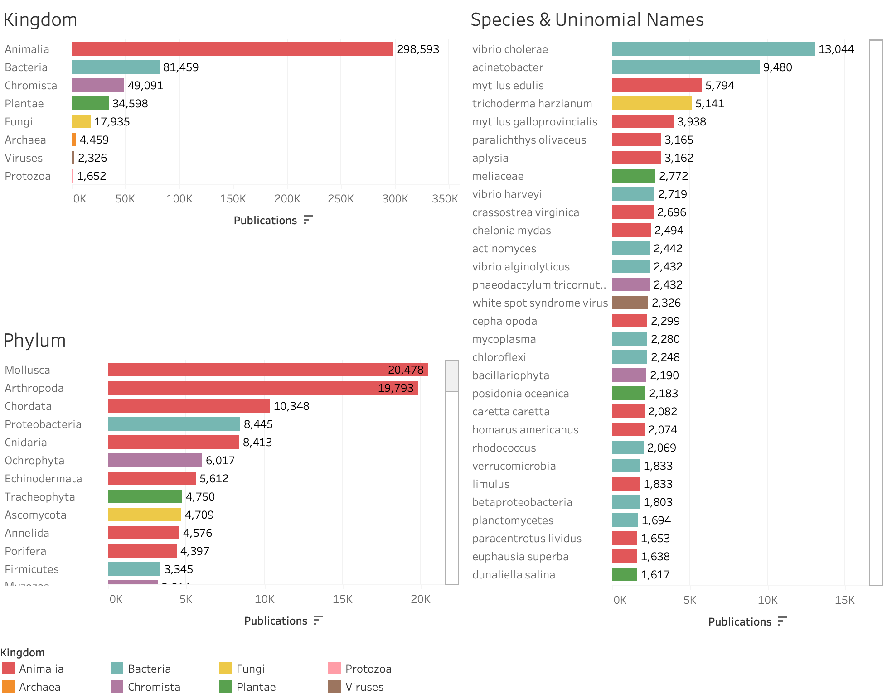
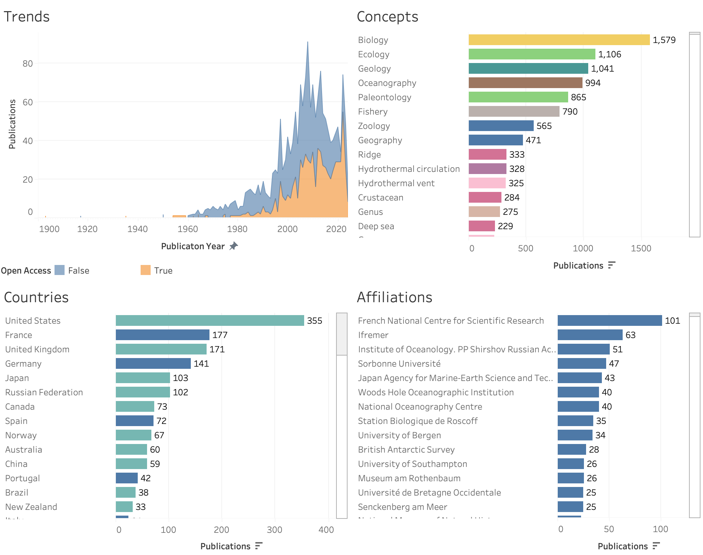

echarts = require("https://cdn.jsdelivr.net/npm/echarts@5.4.3/dist/echarts.min.js")
class EchartsRunner{
constructor(id='main',width='700px',height='700px'){
this.id=id
this.width=width
this.height=height
this.rootDiv=''
}
addCodes(func,arg){
console.log('log',arg)
var newfunc=func.bind(this)
newfunc(arg)
//func(this.option)
return this
}
getVars(){
this.option={}
this.rootDiv=html`<div id="${this.id}" style="width: ${this.width};height:${this.height};"></div>`
this.myChart=echarts.init(this.rootDiv);
return [this.option,this.myChart]
}
show(){
return this.rootDiv
}
}3 The Scientific Landscape
Introduction
This section explores the available data on the scientific landscape of marine genetic resources. We start with a broad discussion of the challenges associated with defining the landscape for marine research, from there, we progressively narrow our focus towards marine biodiversity and the deep sea. Throughout this exploration, our aim is to situate research on marine genetic resources within its wider context.
Research on Marine Biodiversity
For the purposes of this research, we assume that published research on marine biodiversity typically references organisms using either taxonomic names or common (vernacular) names. The Biodiversity Graph is a citation graph of the scientific literature. Thus, it is well-suited to offer an overview of research on marine biodiversity. It is built upon publications that reference taxonomic names and the ensuing citation networks derived from those publications.
A key issue highlighted in the 2014 report ‘Valuing the Deep’and subsequent research is the challenge of identifying which organisms occur solely in marine environments, which are found in both marine and other environments, and which organisms are not marine at all. Recent innovations at OBIS,1 based on contributions from the WoRMS database,2 introduce fields identifying whether an organism among the 116 million records is found in marine, brackish, freshwater, or terrestrial environments. Table 1 provides a summary of this data. Using these indicators, we can estimate the number of organisms by rank that, according to OBIS data, are exclusively observed in the marine environment or are ‘marine only’ as they will be described below. As we will see, while this categorisation is far from perfect, it is useful for the purposes of the present study.
Table 1: Marine Organisms in OBIS by Taxonomic Rank and Habitat
It is important to emphasise that classifying an organism as “marine only” based on the available data in OBIS does not necessarily mean that the organism is exclusively found in marine environments. Instead, this calculated measure aids in excluding a significant number of organisms known to inhabit non-marine environments, thus refining the scope of the analysis. Furthermore, higher-order taxonomic ranks—such as phyla, families, and genera—are more likely to encompass organisms found in multiple environments. As a result, we cite these for illustration but centre our analysis on the species level. For our purposes, the species level refers solely to a binomial taxonomic name. It does not incorporate details like the taxonomic authority. This is largely because many works outside the taxonomic community use binomials and often omit details such as the taxonomic authority (the name of the individual or individuals who first validly published the name). Those familiar with the NCBI taxonomy may encounter some variation from their expectations as while it is widely used, it lacks taxonomic authority.
The Biodiversity Graph represents a relatively new method of recording biodiversity records, though citation graphs are well established in the scientometric and bibliometric literature. Within the biodiversity community, the citation graph-based approach is gaining in popularity, with taxonomists aiming to highlight the contributions of taxonomic specialists to the broader biodiversity-related scientific record.
Given the novelty of our citation graph, we decided to validate the 21 million records in the current graph against an independently constructed dataset for marine biodiversity. This was done using the original keyword-based Valuing the Deep dataset, which contains 17,434 DOIs, a 2014 reference set of 21,548 DOIs from the MarinLit database of marine natural product-related literature, and a dataset of 6,659 DOIs from the 2019 WIPO landscape study on marine genetic resources in South-East Asian (ASEAN) countries (Oldham, Shale, and Kindness (2019). Since these sets are now out of date, we retrieved the references and subsequent citing publications to build a dataset of 1,240,324 documents linked to the original sets. The metadata for these 1.2 million documents was obtained using the Lens Scholarly API, processed using the Humboldt NER model, and combined with the OBIS dataset of ‘marine only’ taxonomic names to create a marine reference graph,3 In total, this graph included 30,955 ‘marine only’ taxonomic names (all ranks) in 161,698 publications and 23,095 binomial species names in 113,050 publications.
Conversely, the Biodiversity Graph comprised 49,695 ‘marine only’ taxonomic names in 452,248 publications and 39,362 binomial names in 308,766 publications.4 The distinction between the marine reference graph and the Biodiversity Graph lies in their construction methods: the former was mainly assembled using searches for various marine-related terms (e.g., mud volcanoes in the Valuing the Deep study) and therefore mirrors the limitations of the initial parameters. The Biodiversity Graph, on the other hand, was designed to capture information on organisms by text mining published research literature for millions of taxonomic names and all their citations. Thus, as expected, the Biodiversity Graph would demonstrate broader coverage.
As these figures indicate, a substantial gap exists between the appearance of names in the taxonomic record and their presence in scientific publications available to researchers in digital datasets like OpenAlex. With the increasing digitization of taxonomic records, especially through initiatives such as the Biodiversity Heritage Library, we anticipate that coverage will continually improve.5 Enhancements in access to the full texts of scientific publications should further boost the capture of taxonomic names and their associated common or vernacular names. However, as detailed further below, our capability to spotlight research on biodiversity or any other subject is limited by the availability of digital data and our access to it.
The decision to focus on ‘marine only’ species recorded in the existing OBIS data has certain collateral effects. One such effect is the omission of commercially significant species, such as the giant tiger prawn Penaeus monodon, a central focus of aquaculture in South-East Asia and beyond, from our dataset (Oldham, Shale, and Kindness (2019). While this exclusion narrows our dataset, it allows us to focus our analysis on organisms found solely in marine environments, with the aim of mapping the landscape of research and innovation involving marine genetic resources specifically from the High Seas.
With these caveats and observations in mind, we present a general summary of global research on marine biodiversity. As a starting point Figure 5 provides a general overview of the most common terms in the data, including taxonomic, common, habitat and place names.
Figure 5: A summary of the number of publications and rankings of terms across labels for Taxonomic, Common, Habitat and Place Names.
The rankings in Figure 5 are generated by processing publication data with our Humboldt NER model to extract terms. This model is trained to recognise entities within taxonomic categories, which for our purposes included Species, Uninomials (including the genus, family, or higher order name), Common Names and Viruses, as well as place names and habitats. The training data for the habitat label was derived from a combination of a review of the European Environment Agency’s EUNIS habitat classification (2019 revision) and the real-world use of habitat-related terminology in texts. As an approach, term capture by deep-learning-based Named Entity Recognition models is superior to dictionary-based approaches, as these may fail to capture term variations, such as plurals and minor spelling variations, as observed in the raw data for Figure 5. However, models such as Humboldt NER are not perfect, and for our purposes a more specialised approach to certain labels, particularly place names, is required to identify entities which may not have been picked up by the model. It is also worth noting that data capture is confined to the available metadata for publications (e.g., titles, abstracts, author keywords, concept information, etc.) as opposed to the text of these publications themselves.
We will now explore our ‘marine only’ dataset in more detail. Figure 6 provides an overview of the top taxonomic entities deemed to be ‘marine only’. In approaching Figure 6, note that terms that are marked as ‘Not Known’ refer to taxonomic names that did not match to the GBIF taxonomy.

Figure 6: A summary of the number of publications and rankings for marine only organisms, ranging from Kingdom to Phylum, Species and Uninomial Names.
Figure 6 reveals, as we might expect, that the top rankings are for animals (Animalia). The data is dominated by molluscs (Mollusca) and arthropods (Arthropoda) such as crabs. The limitations of attempts to restrict results to organisms from specific environments are apparent when we consider the prominence of bacteria, notably members of Vibrio including Vibrio cholerae, the causative agent of Cholera, which is not confined to marine environments. Other bacteria such as Shewanella putrefaciens are associated with iron and manganese reduction. Marine chromists are represented by diatoms such as Phaeodactylum tricornutum, for which reported uses have been found in biotechnology. A significant number of publications involve species with an unidentified Kingdom, arising from gaps in the GBIF taxonomy. An example would be the edible marine fungus Ecklonia cava. Among plants (Plantae) we observe a significant number of publications on the seagrass Posidonia oceanica and Dunaliella salina, a unicellular algae found in saline environments that is also sold as a supplement, while Ulval lactuca is an edible sea lettuce. For fungi we observe Trichoderma harzianum which appears to occur across multiple environments as does the halotolerant yeast Debaryomyces hansenii. Archaea are represented at low frequency by Thermoplasma acidophilum which again has been isolated in multiple environments and Cenarchaeum symbiosum which forms a symbiotic relationship with marine sponges. Viruses will be under-represented in this data because only two viruses are currently listed across OBIS, these include the commercially significant White Spot Syndrome Virus which has wide ranging impacts in aquaculture worldwide, notably in South-East Asian shrimp farms. Protozoa are represented at low frequency by Centropyxis aculeata and Neoparamoeba pemaquidensis.
As this brief discussion suggests, in practice while the focus has been significantly narrowed towards species only found in marine environments, we will still encounter species that occur in both marine and non-marine environments. Furthermore, these organisms may occur inside and outside the High Seas. Bearing in mind these considerations, challenges and caveats, we now direct our attention more specifically to the prevailing trends, central topics, and key players and main actors observed within the data.
Trends, Topics and Actors
Figure 7 provides an overview of trends, topics and country counts by number of publications and research institution.
Figure 7: Trends, Major Topics and Actors in the Marine Biodiversity Scientific Landscape
In examining Figure 7 it is apparent that the history of publication of research related to marine biodiversity extends to at least the early 20th Century. The analysis of trends in publications is affected by the availability of titles and abstracts in databases arising from copyright restrictions. Thus, the obvious dip in the data on trends reflects a gap in open access to abstract data.6 The ‘Concepts’ field pertains to article labels applied to publications in OpenAlex using the hierarchical open access Wikidata taxonomy. Predictably, the primary fields of study are biology and ecology. These are followed by applied topics such as fishery, genetics and biochemistry. When considering major topics such as Geology, note that the criteria for inclusion in this marine biodiversity graph is that the publications must be related to marine organisms in some way. As such the data will not capture all geological research or, as we see further down in the ‘Concepts’ panel of Figure 7, all publications in overarching disciplines such as Oceanography.
Country rankings and affiliation data are inherently incomplete. This is because this information may not be captured in the metadata of scientific publications, or it may not be recorded in the first place. This inherent limitation may skew our perception of research activity, as we are working with a dataset that, by its nature, is and will remain incomplete. Since data access has improved recently, newer data is more likely to be complete. Nevertheless, overall rankings will be affected by the lack of availability of affiliation data. When interpreting affiliation rankings, the presence of aggregate organisations should also be noted, such as the Chinese Academy of Sciences. Such organisations may be comprised of institutions which commonly act separately from one another. Conversely, some entities, while listed individually, might be part of broader institutions, resulting in comparisons that aren’t directly analogous. Furthermore, variations in entity naming add another layer of complexity. For instance, the National Oceanic and Atmospheric Administration might be denoted as NOAA or other name variants, resulting in treatment as separate entities in the rankings.
As a result, these statistics, while informative, should not be considered definitive. Absent or incomplete affiliation data, coupled with the difficulty of handling variations of the same name (often referred to as the ‘names game’) is a significant concern for institutions and, in particular, for research funding organisations in evaluating the outcomes of their investments. To address these challenges, initiatives such as the open Research Organizations Registry (ROR) aim to provide harmonised data on organisations and funding bodies. Important initiatives such as ROR increasingly allow us to map global research activity as illustrated in Figure 8.
Figure 8: This figure uses Research Organization Registry (ROR) identifiers with affiliation data to render a global map of activity. The map will not cover all institutions and may contain inaccurate coordinates
Figure 8 demonstrates that the publication of research on marine biodiversity is now widely distributed around the world with discernible hot-spots of activity in all major world regions, with hubs of activity present in the United States, Western Europe and East Asia.
Marine scientific research frequently involves networks of collaboration between researchers based in different organisations and different countries. The promotion of international partnerships and collaboration is a common priority for research organisations. Mapping these collaborations allows us to visualise networks of dominant actors within marine research, as shown in Figure 9.
Figure 9: The academic collaboration network of institutions publishing research on marine biodiversity
This snapshot displays institutions that have published 1,000 or more scientific papers relating to marine biodiversity. Nodes are sized based on the number of publications produced by each institution and edges (lines) between nodes indicate that authors from these institutions have collaborated on a publication containing reference to a marine species. The numbers in the visuals reflect the total number of publications on marine biodiversity research output by each institution.
Figure 10 shows the collaboration network for the French National Centre for Scientific Research, the most prolific author in the dataset, with 45,128 instances of collaboration with other institutions and 9,472 papers published on marine biodiversity. Figure 11 illustrates the same for the Chinese Academy of Sciences, with 21,394 instances of collaboration with authors from other institutions and 6,545 total publications found.
Figure 10: The academic collaboration network for the French National Centre for Scientific Research.
These networks of relations between researchers reflect underlying investments by countries into collaboration and the development of marine research capacity. Whether it is possible to identify levels of investment into research remains a topic of future research. However, it is possible to gain an insight into some of the key agencies involved in supporting deep-sea related research.
Figure 11: The academic collaboration network of the Chinese Academy of Sciences
Table 2 shows the top institutions ranked by number of publications on marine biodiversity, alongside the total collaborations, instances where authors from each institution have collaborated with authors from another institution.
Table 2: Table of total publications by institution (top ranked for illustration)
Countries and Regions
The data presented above can be broken down by number of publications per country and by United Nations Statistical Division region and sub-region as set out in Figure 12. In the data we have, while the French National Centre for Scientific Research and the Chinese Academy of Sciences are the most prolific publishing institutions, as seen in figures above, the United States is the largest publisher of marine research overall, indicating that publication on marine biodiversity in the United States is more dispersed amongst different institutions.
Figure 12: Country rankings by number of publications for UN major regions and UN sub-regions
Authors often collaborate with authors in different institutions across the globe. It is possible to examine this international collaboration to create a picture of global marine biodiversity research relationships. Figure 13 spotlights this international collaboration, depicting the frequency with which authors from institutions in different countries collaborate on marine research publications. Only countries with at least 200 instances of collaboration are shown in the visualisation. Nodes are sized by the total number of collaborations with institutions from other countries. Countries have been colour coded by World Bank Income Classification. These networks may serve as an indicator of countries’ investments in international collaboration and marine research capacity development, alongside their willingness and, crucially, capacity to collaborate internationally.
Figure 13: The international collaboration network of all countries with over 200 publications
According to our data, researchers from the United States have the highest rate of collaboration with other countries, with 48,156 instances of collaboration encompassing all countries with over 200 marine biodiversity related publications. Figure 14 shows the collaboration network for the United States.
Figure 14: The international collaboration network of the United States
The countries with the lowest number of international collaborations are the Low income country Madagascar, with 201 instances of collaboration and the Lower middle income country Senegal, with 203 instances of collaboration. Figure 15 shows the countries Malagasy researchers have collaborated with. Figure 16 shows the same for Senegal. It is clear from these figures that even countries with relatively few collaborations may still work with researchers from a diverse range of countries.

Figure 15: The international collaboration network of Madagascar
Figure 16: The international collaboration network of Senegal
In considering this data we would emphasise that as more data on author affiliations becomes available a clearer view is likely to emerge of country collaboration networks.
Funding
Within scientific publications, funding information has typically been provided by researchers in the free form acknowledgements section.7 This often results in data that is unstructured and challenging to process. As discussed in Valuing the Deep, databases began incorporating the option to include funding details from the mid to late 2000s onwards. Since then, funding agencies have placed a greater emphasis on the inclusion of funding details in publications arising from their financial support. Recent additions to databases like OpenAlex include new funder identifiers to better link funding entities with publications. Yet, the data is still sparse. For instance, of the 476,661 publications in the marine dataset discussed here, only 55,700 (11.6%) contain funding details. Nonetheless, given the increasing importance of this data to funding bodies, which are accountable to taxpayers, we anticipate a future rise in the availability of such information. Figure 17 presents a summary of the available data on funding by organisation, country and the year relevant articles were published. We also include available data on trends in open access (orange) and closed access (blue) publications linked to funding data in OpenAlex.
Figure 17: This figure shows available information for marine biodiversity related publications in a set of 55,700 publications as well as trends in the publications that include funding information. Data on trends in Open Access publications suggests that funding agencies increasingly promote and require open access publications.
When considering Figure 17 and further visualisations of funding data it is important to note that the sparsity of the data means that we are ‘seeing through a glass darkly’. Caution is therefore encouraged in drawing conclusions about funding for marine biodiversity research in general or deep-sea research specifically. However, this data is valuable in highlighting the major funding agencies for marine biodiversity-related research and in identifying emerging funding networks. As discussed in Valuing the Deep, these networks are often invisible to funding agencies and to the wider research community.
Note that the funding programmes of the European Union such as the Framework and more recent Horizon programmes are listed separately in the OpenAlex funding table, diminishing the visibility of the EU as a major funder of research in Figure 17.
It is possible to create collaboration networks for funding institutions showing which funding institutions have funded the same research publications. Figure 18 illustrates the primary collaboration links between funding agencies supporting more than 50 publications of marine biodiversity-related research.
Figure 18: Collaboration network of major funders of marine biodiversity research.
Figure 19 shows the funding collaboration network for the National Natural Science Foundation of China, the funder of the most publications (9577) with the most collaborations (7496).
Figure 19: Funding collaboration network of the National Natural Science Foundation of China
Figure 20 presents the network for the European Union. Note that in this visualisation EU programmes such as Erasmus+, Horizon 2020, and the 7th Framework Programme have been collectively attributed to the European Union to ensure their visibility. This may obscure relationships between individual EU programmes. Similarly, the way authors submit funding information may produce a comparable effect for the National Natural Science Foundation of China.
Figure 20: Funding collaboration network of the European Union
Applied Research
As we have already seen in the brief researcher profiles, potential practical applications have been a central focus of research on marine organisms. We can gain a clearer view of applied research using information on chemical compounds for the records available through the Lens Scholarly API service as set out in Figure 26. The data is limited to publications that appear in the PubMed database for biomedically focused research. PubMed applies the Medical Subject Headings (MeSH) classification. This data is available for 136,982 of the publications in the dataset and will not cover publications outside PubMed.
Figure 26 reveals a range of different topics that are important in marine research, such as work on water pollutants. Figure 26 focuses on research on marine organisms for anti-cancer (anti-neoplastic) agents and highlights the main research topics, the organisms involved such as Dolabella auricularia or the dodge sea hare as well as the institutions involved in research publications on anti-cancer agents.
So far we have focused on providing a general portrait for marine biodiversity research using a citation graph based approach. We will now focus specifically on research in ABNJ.
Figure 26: Supplementary information on chemical substances is available for 136,982 publications and is limited to publications appearing PubMed (biomedically focused research) that uses the Medical Subject Headings (MeSH) classification.
Defining the Deep Sea
The Valuing the Deep study highlighted the primary analytical challenge of differentiating between samples collected within national jurisdictions and those sourced from the High Seas. In simpler terms, the fundamental question posed is: where was this sample obtained from? The proposition for the BBNJ unique standardised batch identifier, as outlined in the new BBNJ Treaty, offers a resolution to this dilemma by introducing a straightforward batch identifier for samples collected from the High Seas. Once applied to samples collected on a research cruise, or an undersea installation, the identifier cascades into collections, databases of digital objects such as digital sequence information, publications and patents.
In the interim before the identifier becomes operational, we are confronted with the challenge of distinguishing between research on marine biodiversity and genetic resources in general and that conducted specifically within the High Seas. Valuing the Deep approached this challenge by combining data from different specialist databases and OBIS. An updated version of that approach centres around crafting a working definition of High Seas research based on scoreable parameters.
One advantage of a working definition approach is that the parameters can be adjusted and updated as more data becomes available and experience is generated in use of the definition. Second, a working definition enjoys the benefit of methodological transparency by clearly outlining the parameters and data sources utilised in defining High Seas research. Another potential advantage is that it may be applicable both inside and outside of scientific literature. Finally, the working definition can serve as an intermediate step until such time that the BBNJ identifier comes into operation. The working definition, insofar that it succeeds in isolating high seas research, can then assist in developing experiments to test data capture using the batch identifier prior to its full roll out through the Clearing House Mechanism. As such, in the interim period leading to the entry into force of the treaty a working definition can also contribute to testing out how the batch identifier will work in practice.
The working definition consists of the three main elements:
A) Named Places
A number of dictionaries are available with the coordinates of named places in the world’s oceans, these include:
The General Bathymetric Chart of the Oceans (GEBCO) Gazetteer created by the International Hydrographic Organisation and UNESCO, which is the key authoritative resource for named underwater places.
The InterRidge vents database for hydrothermal vents.
The Seamounts Online database with names and coordinates for seamounts (discontinued)
The Geonames public contribution dataset of underwater place names (terrestrial aquatic and marine)
Coordinates for Cold Water Corals including named places (e.g.seamounts)
We can visually illustrate the application of this approach using geographic place names. Figure 27 displays the coordinates for 17,777 distinct named places and 22,921 variant names derived from the sources noted above.
Figure 27: A compilation of 17,777 named underwater places with coordinates from four sources. Large features in the GEBCO Gazetteer such as ridges, trenches etc. have been reduced to their centroid coordinates. (Click to expand the image in a new tab)
In considering Figure 27 it is important to note that some of the named places may appear in freshwater terrestrial settings. These are mainly from the open access Geonames dataset and include, for example, subglacial basins in Antarctica and are derived from entries coded U for Undersea in Geonames or appearing in the Geonames ‘no country’ dataset. Other named places are found in lakes and rivers.
The GEBCO Gazetteer includes coordinates for large features such as seamounts, ridges and troughs in the form of line strings, polygons and multipolygons. For these larger features we use the geometric centroid because it allows us to aggregate records to the named place. In a small number of cases this may lead to duplication of a named place (where a point is provided in the underlying data and we use a centroid). We also note that it is possible that for large geological features it is possible that some parts of the feature will fall inside the EEZ while other parts fall into ABNJ. Cases where this could apply have not been identified.
Named underwater places share the characteristic that they have commonly been given multiple names or variants of names in multiple languages. In some datasets these are referred to as preferred names with synonyms. Wherever possible we retain the variants of names which will be aggregated to the same data point. We awarded unique identifiers to each place and its corresponding variant to allow the data to be aggregated.
The use of named places with coordinates allows the relationship between a named place and the EEZ (taken as a single global entity) to be calculated using the Marine Regions EEZ map. This is achieved by calculating those coordinates that fall inside the global EEZ and those that fall into ABNJ. Figure 28 shows the impact of this approach. Note that the Marine Regions map of the global EEZ includes an EEZ around Antarctica which is not correct.
Figure 28: Named marine places that are located in the EEZ and ABNJ. (Click to expand the image in a new tab)
Figure 29: Named marine places that are located in the High Seas (ABNJ). (Click to expand the image in a new tab)
Figure 29 shows the impact of removing those named places falling inside the EEZ from the display.
In total this approach identified 3,029 places in the High Seas associated with 4,397 names including name variants. Note that because Antarctica is represented on the Marine Regions shapefile as possessing an EEZ we will undercount named places in ABNJ for the waters around Antarctica.
B) Dictionaries of Terms
Dictionaries of terms can be used to search the scientific literature, patents and web pages. These include:
Underwater features at varying levels of detail (e.g.the water column, hydrothermal vent(s), seabed, seamounts or guyots, mud volcanoes, cold seeps, cold water corals, depth characteristics such as pelagic, mesopelagic, hadal etc.). Underwater features are mainly derived from the generic term field in the GEBCO Gazetteer.
Deep sea terms that are widely used in the high seas research literature (e.g. deep sea, deepsea, deep-sea, high seas, ABNJ etc).
An Oceans dictionary for the world’s major oceans.
A Seas dictionary containing names of the world’s seas, which are typically inside national jurisdiction. This can be used for the purposes of excluding records.
Dictionary based approaches are relatively simple. The Features dictionary was compiled from the GEBCO Gazetteer generic names values (e.g. seamount) with additions from a review of top feature related words and phrases that appear in the marine dataset (single words and phrases). Dictionaries of the World’s Oceans and Seas are available through the International Hydrographic Organization (IHO) Limits of Oceans and Seas (3rd edition, 1953). At this stage we focused only on compiling terms in English with terms in other languages to be added at a later date if it proves useful to further pursue the working definition.
Figure 30 showcases the outcomes of entity extraction using a dictionary, represented as the number of publications in the marine set. It is worth noting that, as is often the case, some terms will prove to be noisy and necessitate further review for possible exclusion (e.g. ‘the gut’, ‘the gap’ etc.) while other terms could benefit from further aggregation. Manual review and refinement of terms is crucial to ensure precise data capture.
Figure 30: Illustrative rankings of document counts from dictionaries
C) Taxonomic Records
Taxonomic records are typically found in OBIS and include:
Species occurrence records with coordinates for organisms in ABNJ. This is in effect, a calculation on OBIS occurrence records. OBIS currently lists 8.9 million occurrence records for 27,740 species and 38,546 taxa for ABNJ.
Organisms listed in OBIS as deep sea organisms through the World Register of Deep Sea Species (WoRDSS, now part of WoRMS which contributes to OBIS).
Taxa appearing in the Chessbase database for organisms from deep sea chemosynthetic environments and recorded in OBIS.
Entries marked as ‘High Seas’ by researchers and publishers contributing to OBIS.
One benefit of a working definition approach is that records can be scored based on whether they meet TRUE/FALSE criteria, and those scores can be weighted in different ways to reflect their importance.
For example, what we call GEBCO feature terms are individual words that describe an underwater feature such as ‘vent’, ‘trough’, ‘trench’, ‘ridge’, ‘column’ and ‘zone’. Some of these terms, such as vent, are quite distinctive but others may be in very widespread use, such as column (for column chromatography) or zone (e.g. for the zone of a gene or genome). As such, some individual terms that describe features may be very noisy in nature and therefore merit a lower weighted score.
In contrast, feature words are precise underwater place names that are situated in ABNJ. Where a record contains an ABNJ place name it is virtually certain that the record involves research in the high seas. The measure therefore merits the highest weighted score.
Other measures within the working definition, notably taxonomic names, are more ambiguous due to ambiguity in the underlying data. For example, the OBIS use of a marine label for data does not in reality mean that a particular species is exclusively marine. Similarly, the calculation that a species only occurs in ABNJ using OBIS data is unlikely to fully hold true. A case in point is Trichoderma harzianum, a fungus that is found in marine environments but is widespread in other environments. In OBIS data this fungus is labelled as marine only and is also recorded in the OBIS data for ABNJ. As such, the fungus will wrongly receive a high score across multiple measures in the working definition.
As noted above, species occurrence records for deep sea organisms can be identified in OBIS data for Chessbase and WoRDSS. In addition, as noted above, in its public interface OBIS currently lists 8.9 million occurrence records for 27,740 species and 38,546 taxa for ABNJ. We further restricted the data to marine only organisms by filtering out taxa with records from terrestrial, brackish or freshwater environments. We also filtered out any records with a continent, country, state province, municipality or similar code. The results are set out in Figure 31.
Figure 31: OBIS Occurrence Records in ABNJ
The application of these filters reduced the number of taxonomic names to 7,982 in 1,477,285 occurrence records as shown in Table 3. We refer to this as the ‘ABNJ only’ group as a working set consisting of 6,203 unique binomial names and 1,779 higher order or uninomial taxonomic names. The latter are likely to encompass organisms found in multiple environments.
Table 3: Occurrence Rankings for Marine Organisms in ABNJ by number of occurrence records
The top organisms in Table 3 in terms of the number of occurrences are Antarctic krill, Bigeye tuna, Swordfish, the Copepod Calanus finmarchicus found mainly in the North Atlantic and the Southern Ocean Copepod Calanus simillimus along with other krill species such as Thysanoessa macrura and Copepod Rhincalanus gigas.
This indicates that organisms that are recorded with high frequency in ABNJ are typically found in shallower waters and, in the case of krill, tuna and swordfish, will be commercially significant for fisheries.
Taken together, the combination of working definition elements provides a structured way of focusing analysis on research in the High Seas.
Applying the Working Definition
The three categories of data identified above are used to construct a working definition with weighted scores. Table 4 sets out the criteria and weighted scores for the working definition.
Table 4: Weighted Criteria for the Working Definition with explanatory notes.
Table 5 shows examples of matching scientific publications against the weighted criteria mentioned above. The figure shows the OpenAlex publication identifier, the total score of the record against the criteria and a selection of columns.
Table 5: Weighted criteria applied to individual records (selection for display).
The ranked totals for the criteria across the dataset are summarised in Table 6.
Table 6: Marine Working Definition Rankings
In interpreting Table 6 we can immediately observe that the majority of the overall marine dataset falls within the group 1 range of the working definition. That is, the records, even where they involve a marine organism do not contain a reference to a marine feature, or place name that would move them out of the group 1 range under the weighted criteria. Two large groupings of publications are found in groups 2 and 3 respectively and are dominated by members of Vibrio, Trichoderma and Mytilus as well as White Spot Syndrome Virus (affecting shrimp) as well as a range of plants such as the algae Dunaliella salina and the seagrass Posidonia oceanica.
A distinctive cluster of documents emerges in Group 5. Taken together Group 4 to 10 consist of 26,413 documents and will be our focus.
Level 4 and Above
A focus on records with a score of 4 or above limits the dataset to 26,413 records in total representing 5.5% of the overall raw marine dataset. Figure 32 displays the top organisms meeting these criteria.
Figure 32: Marine Species and Uninomial Names (n = 26,413)
At this level, the focus has narrowed considerably to species associated with the oceans and ABNJ. Prominent species include the copepod Calanus finmarchicus which is widely distributed in the North Atlantic Ocean. The second highest ranked species is Antarctic krill (Euphausia superba). The prominence of the widely distributed fungus Cladosporium herbarum, a common allergen, could initially be dismissed as the intrusion of noise except for the commercial interest in marine Cladosporium as a source of novel metabolites with a range of potential applications.8 Further down the rankings, we find the red seabream (Pargus major) as a commercially important fish species, the Norwegian lobster Nephrops norvegicus and Caribbean spiny lobster Panulirus argus. This suggests that while the focus is narrowing we will observe a mix of marine organisms from the EEZ and ABNJ.
Figure 33 displays trends in publications at rank 4 and above and the top concepts associated with publications. Note here that a very distinct trough appears in the data that is assumed to reflect the absence of open access forms of abstracts in Open Alex rather than a decline in activity.9

Figure 33: Overview of Research Activity at Rank 4 and Above (n = 26,413)
In considering data by country, note that we observe a similar pattern to the more general marine data, except that China appears to become less prominent as the working definition takes us into deeper waters inside the EEZ and into BBNJ. This pattern is reflected in the available data on author affiliations for publications where we can also observe that the University of Sao Paulo is moving up the rankings. We would caution however, that these changes could reflect gaps in the availability of affiliation data in the publication dataset where 355,270 of the 476,661 records contain country information. In total, 16,325 records (61%) of the 26,413 publications at level 4 and above possess country affiliation information and 10,088 do not.
A wider view of trends in activity by country and United Nations Region is provided in Figure 34. All major world regions continue to be represented. The proportion of participation, measured as a percentage share of publications reveals potentially interesting features. Thus, across the 355,270 publications in the raw marine graph with country data, countries in the Africa region accrued 12,967 publications (3.65% of the total). At level 4 and above we observe participation by Africa in 515 publications representing 3.15% . A similar pattern where regions appear to hold their share with some minor variation is also suggested in this data. This could be interpreted as meaning that as research moves into deeper waters, it does not necessarily follow that the participation of developing countries decreases radically (expressed in terms of publications). However, the gaps in affiliation country information mean that it is difficult to draw a firm conclusion about this data, expect that a more nuanced interpretation of country participation in marine research in ABNJ may be possible. Furthermore, it is desirable to promote the inclusion of country information for all authors to provide a clearer view in future.

Figure 34: Trends in Activity by Country and UN Regions and Sub-Regions (n = 26,413 of which 16,325 have country information)
Figure 35 displays an overview of author rankings for the data at level 4 and above. This is mainly intended to assist with community sanity checking of the data at different levels but also to highlight that contributions to marine scientific research ultimately originate from the work of individual researchers and research teams.
Figure 35: Authors Profile for Level 4 and Above (n = 26,413)
The top ranking authors in the level 4 data include Gregg Rouse at the Scripps Institute who has published on topics such as bone eating worms and more broadly on the phylogeny of a range of marine organisms. Guillermo San Martin from the Autonomous University of Madrid has published extensively on new species and annelids. Tetsuya Komori and Ryota Higuchi have jointly published on glycosides from starfish (Asteroidea). The Dutch marine biologist R.W.M van Soest is a specialist in sponges (Porifera) while Joan Enric Cartes is a specialist in the ecology of deep-sea ecosystems in the Mediterranean and Atlantic.
A brief review of the titles of publications in Figure 35 suggests that we are still in the realms of a mix of EEZ and BBNJ publications.
Figure 36 displays the available data from publications appearing in PubMed on chemical compounds that are a focus of research (based on MeSH terms). Figure 36 suggests the dominance of research on the identification of bacteria at level 4 (marked by the prominence of 16S Ribosomal RNA in the rankings).
Figure 36: Available data on Medical Subject Headings For Level 4 and Above
In considering the data in Figure 36 we see an emphasis on basic research including classification as well as references in the more detailed topic qualifiers to isolation and purification, pharmacology and enzymology suggesting applied research. Albeit at a lower level (not shown), the titles of publications also suggest a growing focus on hydrothermal vents in a range of different areas, including work on a candidate new species of epibiont living on the deep-sea hydrothermal vent shrimp Rimicaris exoculata.
As we narrow the focus to level 6 and above in the working definition, these trends will become more prominent.
Level 6 and Above
At level 6 and above the data narrows considerably to 1,749 records. This makes up 0.3% of the overall marine dataset.
At level 6 and above, Figure 37 reveals that the taxonomic data narrows on the species level to Antarctic krill (Euphausia superba), the blind shrimp Rimicaris exoculata which is found in abundance at hydrothermal vents in the mid-Atlantic ridge, the bivalve Bathymodiolus azoricus found at vent sites in the Azores Triple Junction and Logatchev hydrothermal vent field, the polycheate Pompeii worm Alvinella pompejana found at vent sites in the Pacific Ocean, and the Giant Tube Worm Riftia pachyptila first described in 1981 at a Galapagos Rift vent site.10 Other species that emerge in this data include the abyssal grenadier fish Coryphaenoides armatus found at depth in many of the world’s oceans and the deepwater mussel Bathymodiolus thermophilus.
Figure 37: Overview of Species and Uninomial names in Publication Rankings at Level 6 and above (n = 1,749)
Figure 38 reveals a peak of 61 publications in 2008. With respect to Concepts we begin to see ‘Hydrothermal Circulation’ and ‘Hydrothermal vent’ are rising rapidly up the rankings. The relative country rankings also begin to change, with France moving up in position and countries such as Brazil and China (among others) beginning to drop down the rankings. This is also reflected in the relative positions of organisations in the affiliations, with two French organisations taking a clear lead followed by an Oceanology Institute in Russia. Here we would note that it is important not to read too much into these rankings given the limitations of available affiliation data. Nevertheless, level 6 and above in the working definition appears to mark a transition point towards institutions and research teams specialising in deep sea research.

Figure 38: Overview of Species and Uninomial Publication Rankings at Level 6 and above (n = 1,749, 1,212 with affiliation country data)
Figure 39 displays a detailed breakout of publication activity by country with percentage shares of publications by UN regions and sub-regions.
In considering the country rankings we observe that the US remains the single standout country. However, Europe’s share of activity is increasing. Latin America and the Caribbean are holding their position. South-East Asia shows a decline in its share. Oceania’s share increases and also narrows in terms of the participation of researchers from the Oceania sub-regions being limited to Australia & New Zealand and Melanesia.

Figure 39: Publication Rankings by Country and UN Region at Level 6 and above (n = 1,749, 1,212 with affiliation country data)
Figure 40 displays authors ranked by publication at level 6 and above in the working definition. The publication counts have a narrow range and this measure is intended to highlight that marine scientific research is conducted by real people and teams and to encourage community suggestions for improvements to the working definition.
Figure 40: Publication Rankings by Authors at Level 6 and above (n = 1,749, 1,212 with affiliation country data)
At this level we observe researchers including Didier Jollivet with the CNRS who works on the nucleotide diversity of annelid worms in extreme environments. We also observe Michel Segonzac at the Muséum National d’Histoire Naturelle in Paris, Pierre-Marie Sarradin who leads the Deep Sea Ecosystems Research Unit at IFREMER and Daniel Desbruyères who also specialises in deep sea ecosystems at IFREMER. Elsewhere in the table Francoise Gaill is a senior deep sea biologist at CNRS who has conducted pioneering research on hydrothermal vents while Paul Tyler is a deep ocean specialist and Emeritus Professor in Ocean and Earth Science at the National Oceanography Centre Southampton. Looking beyond France and the UK we also observe Andrey Gebruk of the P.P. Shirshov Institute of Oceanology specialising in hydrothermal shrimp, Timothy Shank at the Woods Hole Oceanographic Institute focusing on the ecology of deep-ocean benthic ecosystems and Hiromi Watanabe at the Japan Agency for Marine-Earth Science Technology whose research topics include genetic divergence and migration patterns.
Of particular interest at this level is the prominent work of women scientists including Angelika Brandt at Goethe University Frankfurt specialising in deep sea biodiversity in Antarctica, Cindy Lee Van Dover at Duke who pioneered research on hydrothermal vents, Nadine Le Bris at Sorbonne University specialising in chemosynthetic communities and Jozee Sarazin at IFREMER researching deep benthos assemblages.
In total, and prior to data cleaning, over 4,000 researchers appear on publications at level 6 and above suggesting that while the number of researchers who actively conduct research in the deep oceans may be limited, they form part of extensive networks.
Figure 41 displays the available data from medical subject headings at level 6 and above.
Figure 41: Publication Rankings involving Chemical Compounds at level 6 and above (n = 3,189)
This suggests that we have indeed progressed into the deep oceans through the references to the Atlantic and Pacific Oceans and to hydrothermal vents. Our aim has been to progressively refine the focus from general marine biodiversity, through research in the deep oceans inside the EEZ and ABNJ towards research conducted in ABNJ.
Named Places in ABNJ in the Scientific Literature
The working definition presented above reveals that a fundamental precondition for the identification of research activity in BBNJ in the absence of the BBNJ batch identifier is the presence of a reference to a named place. A named place may be a Sea that is entirely within BBNJ such as the Ross, Weddell or Sargasso Seas or, more usually, a named underwater place from the GEBCO Gazetteer, seamount, hydrothermal vent or cold water coral datasets.
Figure 42 shows the results of mapping named underwater places in the scientific literature in accordance with whether a named place appears inside the EEZ or in ABNJ. The data includes a small number of place names that appear in the scientific literature but do not appear in the reference sets. The latter were geocoded using the Google Maps API.
Figure 42: Named Underwater Places in the Scientific Literature in the EEZ and ABNJ (Click to expand the image in a new tab)
In total we identified 7,204 publications for marine organisms involving 607 underwater places either in the EEZ or ABNJ. Of these, 89 underwater places were identified in ABNJ involving 2,491 publications.
The rankings for underwater places in ABNJ are shown in Figure 43.
Figure 43: Publication Rankings for Named ABNJ Underwater Places in the Scientific Literature
Figure 43 reveals that publications involving named places in ABNJ are dominated by Seas, notably the Ross and Weddell Seas in Antarctica, the Sargasso Sea and Central Arctic Ocean. In considering these rankings, recall that the data refers to publications involving marine organisms rather than all publications.
Figure 44 shows that it is possible to explore research being published about individual locations, in this case the Clarion-Clipperton Fracture Zone that is an intense focus of concern regarding deep sea mining.
Figure 44: Publication Titles for the Clarion-Clipperton Fracture Zone
The ability to interrogate the scientific literature for named places in ABNJ could play an important role in assisting governments and the research community with assessing the potential implications of activities in ABNJ, whether they be deep sea mining or iron fertilization experiments upon biodiversity.
Conclusion
The analysis presented here is, to our knowledge, the second in depth analysis of research activity in ABNJ following the earlier Valuing the Deep study. As this analysis has made clear, what has changed in the intervening decade is the ability of the research community to access data on the scientific literature at scale and to combine data from different sources (notably taxonomic data from OBIS and GBIF as well as geographic data) in ways that were previously very difficult to achieve at scale. In part these advances are made possible by the use of machine learning models to automate named entity recognition at the scale of hundreds of millions of documents. At the same time, the rise of Large Language Models (as we demonstrate later) provides, subject to appropriate quality controls, important opportunities to automate elements of data retrieval and analysis that must presently be conducted by humans.
The analysis in this section also exposes the ongoing challenges in large scale bibliometric analysis. These challenges are not specific to research on BBNJ but are worth noting as: incomplete access to data to facilitate statistical analysis of trends, and; incomplete data on author affiliations and funders. Nevertheless, it is important to emphasise that the situation is much improved both in terms of the quantity and quality of data available and in the availability of tools to work with data at scale.
A main focus of this discussion has been to advance the idea of a working definition for research in ABNJ consisting of a weighted multi-criteria matrix for identifying research that is more likely to be taking place in BBNJ. The experimental approach to the working definition presented here is intended to bridge the gap, and contribute to the assessment of, the eventual roll out of the BBNJ standardised batch identifier established under the Treaty. In concrete terms, in the intervening period before the deployment of the batch identifier, we anticipate that the working definition could be further refined and its use automated for retrieving research relevant to the Treaty and its scientific community. The working definition and data presented here could also contribute to piloting the identifier and to the eventual assessment of the effectiveness of the identifier in capturing research conducted in BBNJ. Put in other terms, the working definition can serve as a useful temporary stop-gap measure in capturing marine research in BBNJ and provide useful points of reference in constructing a better way forward.
OBIS = Ocean Biodiversity Information System; OBIS is a global open-access data and information clearing-house on marine biodiversity for science, conservation and sustainable development↩︎
WoRMS = World Register of Marine Species; WoRMS is a taxonomic database that aims to provide an authoritative and comprehensive list of names of marine organisms.↩︎
We used a full data snapshot from the Ocean Biogeographic Information System (OBIS) from the 8th of February 2023 available from https://obis.org/data/access/ and an ABNJ Area dataset on the 20th September 2023 from https://obis.org/area/1.↩︎
This version uses an updated marine Biodiversity Graph dataset consisting of 483,739 publications.↩︎
A notable challenge in this regard is that some years ago taxonomic databases chose to focus on lsid (life science ids) rather than the use of the now more popular document identifiers (dois) used for publications. The absence of dois renders records effectively invisible to large datasets such as OpenAlex.↩︎
See the data presented here for more detail: https://docs.openalex.org/api-entities/works/work-object↩︎
The introduction of ORCID identifiers has improved the ability to disambiguate author names and to record funding information. Links between datasets of scientific publications such as OpenAlex and ORCID records could improve the coverage of funding information and facilitate testing of data capture of research publications on marine biodiversity in BBNJ.↩︎
Gamal and Sabrin Mar Drugs 2021 https://doi.org/10.3390%2Fmd19110645↩︎
A trough and a spike are observable for scientific records across this period as a whole (e.g. in data sources such as the Lens) and this is very marked for Biology. This could reflect a trough in the availability of open access abstracts that is possibly exaggerated by a major spike in COVID 19 and post-COVID19 publications. See here for data on Biology journal articles in the Lens confirming the trough and dramatic spike.↩︎
https://www.marinespecies.org/aphia.php?p=taxdetails&id=266010↩︎